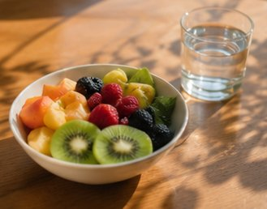

毎日3つの感謝を記録
今日の気分と感謝したことを3つ記録するだけ。1分で完了するシンプルな習慣です。
毎日の感謝を記録してメンタルヘルス向上。科学的に証明された感謝習慣で、睡眠改善・心理的幸福感アップ。
登録不要・完全無料・プライベート・オフラインOK。
🌟 今日の感謝を記録する科学的に裏付けられた感謝習慣を、続けやすく。記録・可視化・振り返りまでこれ1つで。
今日の気分と感謝したことを3つ記録するだけ。1分で完了するシンプルな習慣です。
書くことに迷ったらヒントをタップ。感謝文の例を提案し、毎日の記録を後押しします。
就寝前にやさしい配色。睡眠改善と相乗効果のある夜のルーティンに最適です。
記録はすべてあなたの端末内のみに保存。サーバーに送信されず、登録もインストールも不要。オフラインでも安心して続けられます。
ポジティブ心理学・感謝研究で報告されている効果（参考値）
※ R.エモンズ博士らの感謝研究・ポジティブ心理学の知見を参考にした目安値です。効果には個人差があります。
連続記録ストリーク・年間グラフ・12ヶ月サマリーで、感謝のトレンドをひと目で可視化。続けるほど、自分の心の変化が見えてきます。
アカウント登録もインストールも不要。今すぐブラウザで始められます。
今日の気分を絵文字でタップ
感謝したことを1〜3つ入力
ワンタップで端末内に保存
履歴・統計・グラフで可視化
連続記録で習慣化を達成
忙しい毎日でも、心を整える小さな習慣を。
1日を穏やかに締めくくる
気持ちの切り替えを習慣に
今日の良かったことを共有
前向きな1日のスタートに

感謝日記をはじめる前に、気になることをチェック。
幸福感の向上・睡眠の質改善・ストレス軽減などが、ポジティブ心理学の研究で報告されています。毎日「感謝できたこと3つ」を書くことで、脳がポジティブな出来事に注目する習慣が育まれます。効果には個人差があります。
完全無料です。会員登録もアプリのインストールも不要で、ブラウザを開くだけですぐにご利用いただけます。
ご利用端末のブラウザ内（ローカルストレージ）のみに保存されます。外部サーバーには送信されないため、プライバシーが守られた状態で安心してお使いいただけます。
はい。スマートフォン・タブレット・PCのすべてに対応したレスポンシブデザインです。ホーム画面に追加すればアプリのように毎日すぐアクセスできます。
「週3回でもOK」と緩く始めるのがコツ。連続記録バッジや今日のティップ、AIサジェスションが、無理なく習慣化をサポートします。